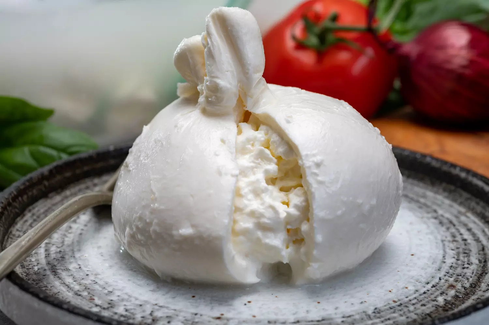
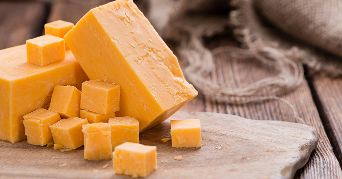
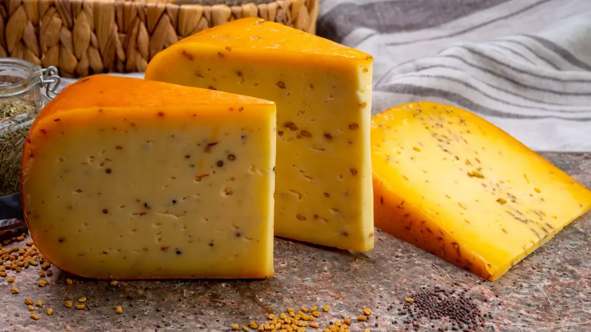

Top 3 chesses on Land

Selon moi, ceci est l'évolution parfaite de la mozzarella, la burrata est un fromage coulant sur nos plats favoris si ça ce n'est pas un délice.

L'un des fromages le plus connu et classique de notre histoire, le cheddar très utilisé dans nos fast-food favoris.

Là il s'agit d'un goût pûrement personel, simple et efficace le gouda accompagné avec du pain et un bon verre de vin pour les puristes, je ne sais pas j'ai jamais touché à une goûte d'alcool.